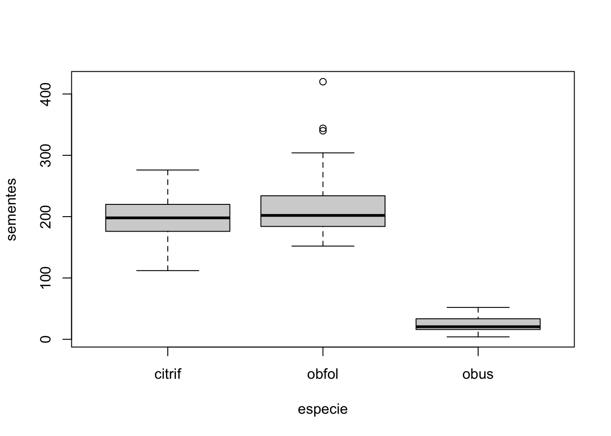
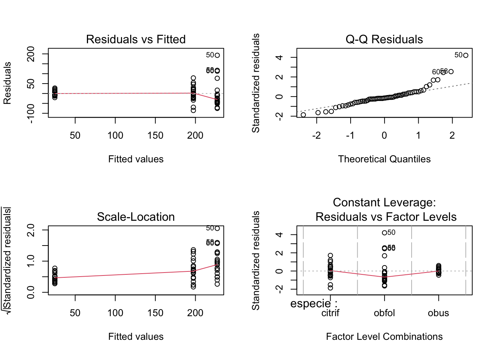
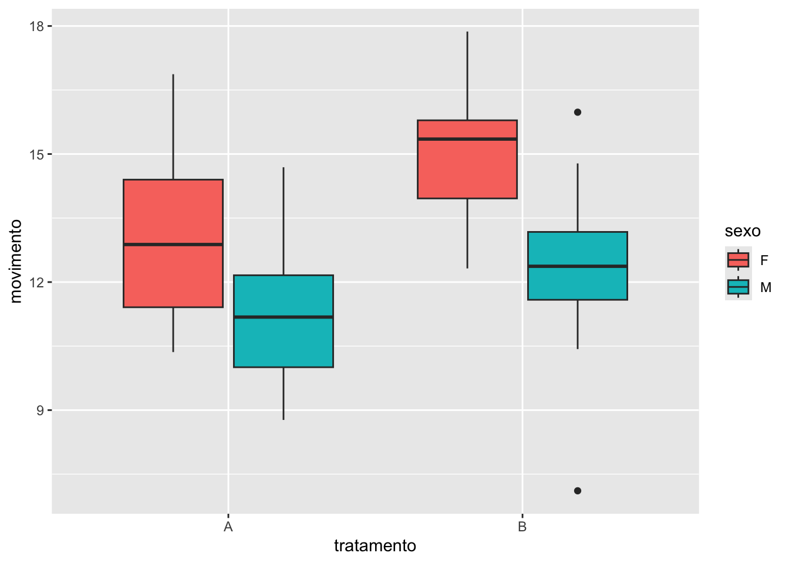
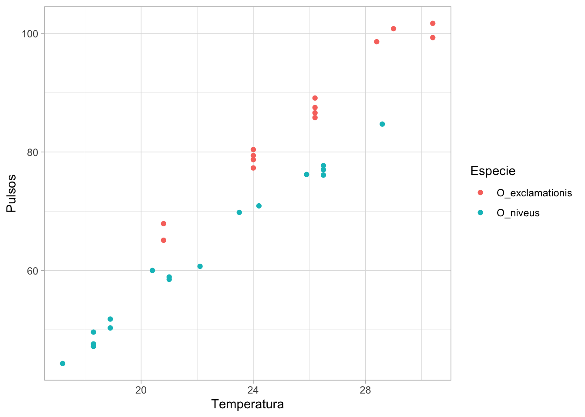
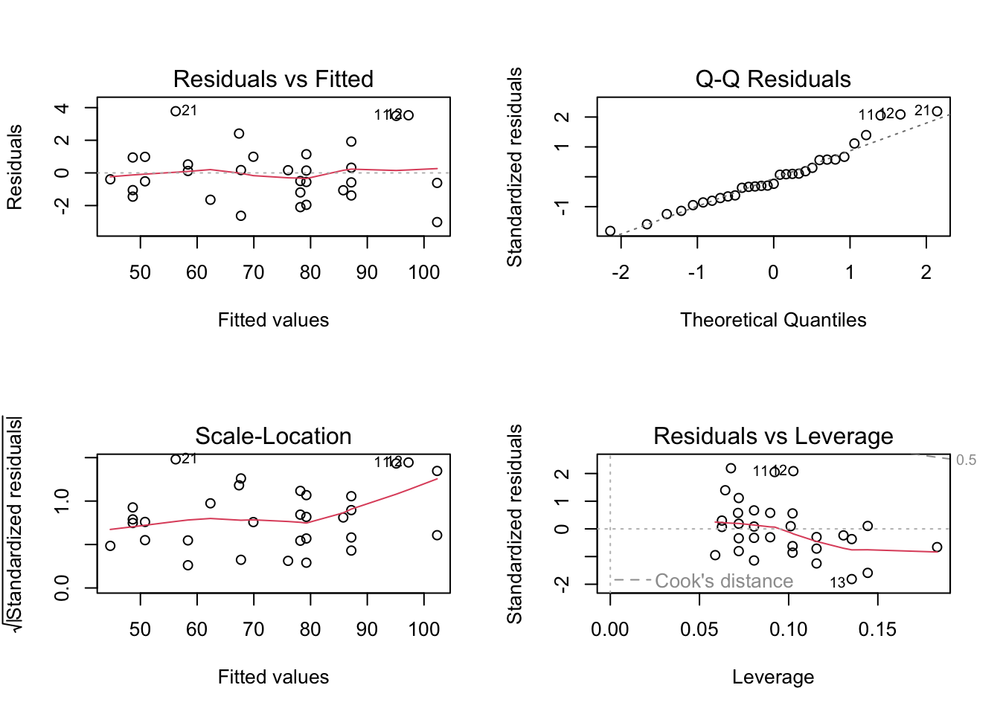
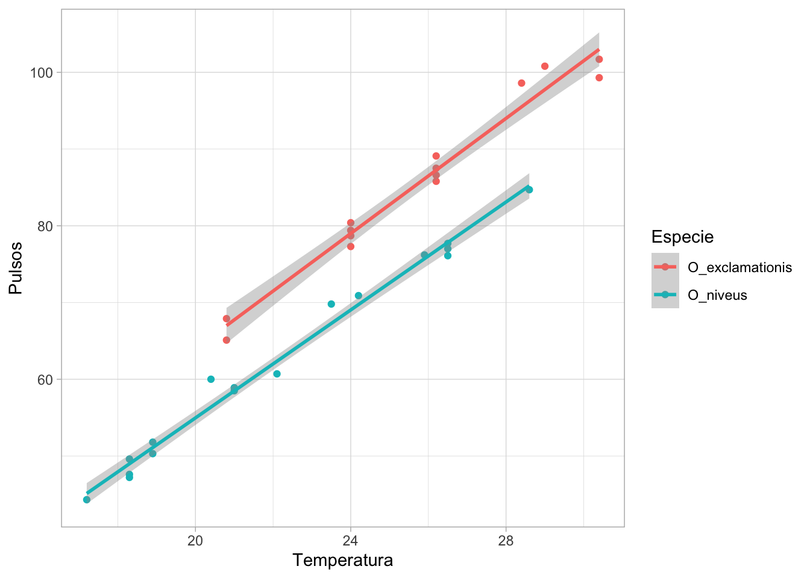
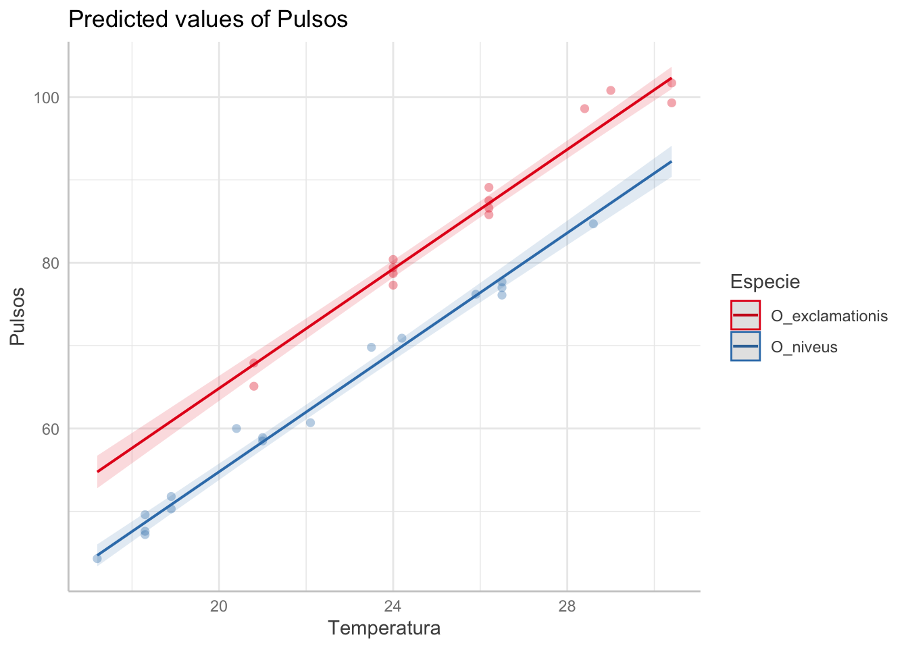

A análise de variância (ANOVA) é um método desenvolvido por Robert Fisher para realizar o particionamento das variâncias. Neste método, criamos um modelo linear onde temos variável preditora categórica variável resposta contínua (Gotelli & Ellison, 2016). Este método pode ser usado para comparar três grupos ou mais, e verificar se há diferenças entre eles.
9.1 ANOVA de um fator
Vamos analisar o conjunto de dados figos_comp, que apresenta o diâmetro e a produção de sementes em figos de 3 espécies de figueiras.
library(readxl)fig_comp <-read_excel("dados_R.xlsx", sheet ="figos_comp") # importar os dadosstr(fig_comp)
No conjunto de dados, temos as variáveis contínuas diametro e sementes que analizaremos como variáveis resposta \(y\) e a variável categórica especie, que analisaremos como variável preditora \(x\).
Vamos comparar inicialente as espécies em relação à quantidade de sementes. Vamos visualizar graficamente os dados utilizando um boxplot (Figura 9.1).
boxplot(sementes ~ especie, data = fig_comp)

Figura 9.1: boxplot de sementes para três espécies de figos.
As medianas entre duas espécies Ficus citrifolia (citrif) e F. obtusifolia (obfol) são próximas, enquanto a espécie F. obtusiuscula (obus) parece apresentar menos sementes.
Vamos testar se há diferenças significativas entre os três grupos estudados:
sem.lm <-lm(sementes ~ especie, data = fig_comp)#outra maneirasem.aov <-aov(sementes ~ especie, data = fig_comp)
Neste passo, criamos um modelo linear testando a relação da variável categórica na variável contínua sementes. Podemos observar a tabela de ANOVA:
anova(sem.lm) #ou summary(produt.aov)
Analysis of Variance Table
Response: sementes
Df Sum Sq Mean Sq F value Pr(>F)
especie 2 478631 239315 108.01 < 2.2e-16 ***
Residuals 57 126289 2216
---
Signif. codes: 0 '***' 0.001 '**' 0.01 '*' 0.05 '.' 0.1 ' ' 1
A tabela de ANOVA mostra os graus de liberdade associados a espécie e aos resíduos, as somas dos quadrados, os quadrados médios, o valor de F do teste de hipótese e o valor p. O valor de p nos indica que, considerando a significância de 0,05, rejeitamos \(H_0\) e dizemos que pelo menos uma das médias é diferente das demais.
9.1.1 Análise do modelo
Podemos analisar o modelo visualmente da mesma forma que fizemos com os modelos de regressão linear. Podemos observar se não há uma tendência de aumento dos resíduos ao longo do tratamento, e se a distribuição dos resíduos se aproxima à distribuição normal ( Figura 9.2).
par(mfrow =c(2,2))plot(sem.lm)

Figura 9.2: diagnóstico do modelo da quantidade de sementes em três espécies.
A primeira figura avalia se as variâncias são constantes e não deve haver um padrão entre os resíduos e os valores ajustados. No segundo, é testada a normalidade dos resíduos, e os pontos devem ser dispostos em uma linha reta na relação entre os resíduos padronizados e os quantis teóricos derivados da distribuição normal. O terceiro gráfico avalia o comportamento dos resíduos (para mais detalhes, ver Jones et al., 2022). Observamos que pode haver violação nos pressupostos dos modelos lineares, principalmente pela análise do gráfico quantil-quantil.
9.1.2 Teste a posteriori
O teste de ANOVA indicou a existência de diferenças em pelo menos um dos grupos. Para descobrir que grupos são diferentes, realizamos comparações par a par entre eles. Um dos testes utilizados para isso é o teste HSD de Tukey (Honest Significant Difference). Ele se assemelha a um teste t onde o erro do tipo I é corrigido para comparações múltiplas.
Nos resultados é mostrada diferença das médias dos grupos par a par (diff), o intervalo de confiança entre as diferenças e o valor-p do teste estatístico. Neste caso observamos diferenças entre obfol e citrif e entre bus e obfol, mas não há diferenças entre obfol e citrif.
9.2 ANOVA fatorial
A ANOVA de dois fatores pode ser utilizada quando temos duas variáveis categóricas preditoras.
Vamos utilizar os dados atividade. Neste conjunto temos dados simulados da alimentação e movimentação de duas espécies de insetos para machos ou fêmeas.
# A tibble: 6 × 3
tratamento sexo movimento
<chr> <chr> <dbl>
1 A M 12.4
2 A M 10.0
3 A M 10.0
4 A M 14.7
5 A M 12.0
6 A M 8.77
Ao observar os boxplot ( Figura 9.3), podemos inferir que há diferença na quantidade de cálcio no sangue para grupos tratados com o hormônio e não tratados. O boxplot pode ser feito utilizando o pacote ggplot2:
library(ggplot2)ggplot(ativ)+geom_boxplot(aes(x = tratamento, y = movimento, fill = sexo))

Figura 9.3: boxplot da movimentação em insetos machos e fêmeas que receberam 2 tratamentos.
Vamos criar o modelo utilizando a movimentaçãoo como variável resposta e tratamento e sexo como preditores, utilizando a função lm( ):
mod.ativ <-lm(movimento~ tratamento * sexo, data = ativ)anova(mod.ativ)
Analysis of Variance Table
Response: movimento
Df Sum Sq Mean Sq F value Pr(>F)
tratamento 1 35.175 35.175 10.500 0.002011 **
sexo 1 84.966 84.966 25.364 5.26e-06 ***
tratamento:sexo 1 2.204 2.204 0.658 0.420709
Residuals 56 187.595 3.350
---
Signif. codes: 0 '***' 0.001 '**' 0.01 '*' 0.05 '.' 0.1 ' ' 1
Observamos um efeito significativo de tratamento sobre movimento. A variável sexo também explicou a variação na movimentação. A interação tratamento:sexo não foi significativa.
9.3 ANCOVA
A ANCOVA é uma extensão da ANOVA, onde incluímos fatores e variáveis contínuas (covariáveis) como variáveis preditoras. Assim, esse delineamento pode ser considerado como um híbrido entre ANOVA e regressão linear (Gotelli & Ellison, 2016).
Para exemplificar, vamos utilizar o conjunto de dados grilos, adaptado de Walker (1962), no qual foi estudado a canção de acasalamento de grilos. Neste conjunto, são apresentados os números de pulsos por segundo emitido por grilos machos das espécies Oecanthus exclamationis e O. niveus a diferentes temperaturas:
Neste conjunto, temos duas variáveis contínuas: o número de pulsos emitidos e a temperatura. Além disso temos uma variável categórica (espécie).
Vamos visualizar a relação entre o número de pulsos e temperatura, utilizando cores diferentes para espécies diferentes (Figura 9.4).
ggplot(grilos) +geom_point(aes(x = Temperatura, y = Pulsos, col = Especie))+theme_light()

Figura 9.4: gráfico de dispersão relacionando a quantidade de pulsos e temperatura para duas espécies de grilos.
Ao visualizar os dados, parece haver uma clara relação positiva entre o número de pulsos emitidos e a temperatura. além disso, o número de pulsos emitidos parece diferir para cada espécie.
Vamos criar um modelo linear para ajustar o efeito das variáveis preditoras Temperatura e Especie na variável resposta Pulsos. Vamos considerar também a possibilidade de existir interação entre as duas variáveis preditoras:
grilos.lm <-lm(Pulsos ~ Temperatura + Especie, data = grilos)summary(grilos.lm)
Call:
lm(formula = Pulsos ~ Temperatura + Especie, data = grilos)
Residuals:
Min 1Q Median 3Q Max
-3.0128 -1.1296 -0.3912 0.9650 3.7800
Coefficients:
Estimate Std. Error t value Pr(>|t|)
(Intercept) -7.21091 2.55094 -2.827 0.00858 **
Temperatura 3.60275 0.09729 37.032 < 2e-16 ***
EspecieO_niveus -10.06529 0.73526 -13.689 6.27e-14 ***
---
Signif. codes: 0 '***' 0.001 '**' 0.01 '*' 0.05 '.' 0.1 ' ' 1
Residual standard error: 1.786 on 28 degrees of freedom
Multiple R-squared: 0.9896, Adjusted R-squared: 0.9888
F-statistic: 1331 on 2 and 28 DF, p-value: < 2.2e-16
Há um claro efeito da Temperatura e da Especie na taxa de pulsos emitidas pelos grilos. O aumento de 1ºC na temperatura aumenta a taxa de pulsos em 3.6 segundo o modelo. Além disso, a espécie O. niveus apresenta em média 10 pulsos a menos do que a espécie O_exclamationis.
Podemos verificar a tabela de ANOVA para o modelo:
anova(grilos.lm)
Analysis of Variance Table
Response: Pulsos
Df Sum Sq Mean Sq F value Pr(>F)
Temperatura 1 7894.8 7894.8 2474.0 < 2.2e-16 ***
Especie 1 598.0 598.0 187.4 6.272e-14 ***
Residuals 28 89.3 3.2
---
Signif. codes: 0 '***' 0.001 '**' 0.01 '*' 0.05 '.' 0.1 ' ' 1
Além disso, podemos incluir a interação entre as variáveis preditoras, ou seja, se o efeito de uma das variáveis é modulado pelo efeito de outra:
# Criar mdelo com interaçãogrilos.lm.int <-lm(Pulsos ~ Temperatura * Especie, data = grilos)# comparar modelosanova(grilos.lm, grilos.lm.int)
Analysis of Variance Table
Model 1: Pulsos ~ Temperatura + Especie
Model 2: Pulsos ~ Temperatura * Especie
Res.Df RSS Df Sum of Sq F Pr(>F)
1 28 89.350
2 27 85.074 1 4.2758 1.357 0.2542
O acréscimo do parâmetro de interação não tornou o modelo significativamente melhor, deste modo, optamos pelo modelo mais simples que não considera a interação.
Podemos utilizar a análise gráfica para diagnosticar o modelo (Figura 9.5)
par(mfrow =c(2,2))plot(grilos.lm)

Figura 9.5: diagnóstico do modelo grilos.lm.
Finalmente, vamos criar um gráfico para observar os resultados, a partir do gráfico criado anteriormente (Figura 9.6).
ggplot(grilos, aes(x = Temperatura, y = Pulsos, col = Especie))+geom_point()+geom_smooth(method ="lm")+theme_light()
`geom_smooth()` using formula = 'y ~ x'

Figura 9.6: gráfico de dispersão entre o total de pulsos e temperatura para duas espécies de grilos incluindo ajuste do modelo linear.
Um gráfico mais preciso mostrando a estimativa dos efeitos prevista pelo modelo pode ser feito com o pacote ggeffects (Figura 9.7).
install.packages("ggeffects") #caso o pacote não esteja instalado
Warning: Some of the focal terms are of type `character`. This may lead to
unexpected results. It is recommended to convert these variables to
factors before fitting the model.
The following variables are of type character: `Especie`
plot(grilos.pred, rawdata =TRUE)
Warning: Argument `rawdata` is deprecated and will be removed in the future.
Please use `show_data` instead.
Data points may overlap. Use the `jitter` argument to add some amount of
random variation to the location of data points and avoid overplotting.

Figura 9.7: gráfico de dispersão incluindo o ajuste do modelo utilizando o pacote ggeffects.
9.4 Conclusão
Neste capítulo, exploramos a Análise de Variância (ANOVA) como uma ferramenta para comparar médias entre grupos, utilizando modelos lineares com variáveis preditoras categóricas. Aprendemos a aplicar a ANOVA de um fator para testar diferenças entre grupos, realizar diagnósticos de modelos e interpretar resultados, incluindo testes post-hoc como o teste de Tukey. Além disso, abordamos a ANOVA fatorial para analisar múltiplas variáveis categóricas e a ANCOVA para incluir covariáveis contínuas. Essas técnicas permitem ao leitor avaliar relações complexas entre variáveis, diagnosticar modelos e interpretar resultados de forma robusta, fornecendo uma base sólida para análises estatísticas avançadas.
Gotelli, N. J., & Ellison, A. M. (2016). Princípios de estatística em ecologia. Artmed.
Jones, E., Harden, S., & Crawley, M. J. (2022). The R book (Third edition). Wiley.
Walker, T. J. (1962). The Taxonomy and Calling Songs of United States Tree Crickets (Orthoptera: Gryllidae: Oecanthinae). I. The Genus Neoxabea and the niveus and varicornis Groups of the Genus Oecanthus1. Annals of the Entomological Society of America, 55(3), 303–322. https://doi.org/10.1093/aesa/55.3.303